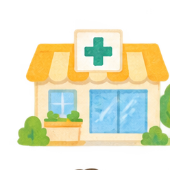

健康や市販薬について相談したい
薬の飲み合わせ、サプリメント、生活習慣、健康づくりの相談など。
探す手掛かり：健康サポート薬局、一般用医薬品の相談、かかりつけ薬局。
医療・薬・健康 ／ 薬局の選び方
まずは、いつもの薬局や薬剤師に相談してみましょう。薬局は、相談したいことや受けたいサービスに合わせて探すこともできます。自分や家族に合う相談先を、目的から見つけられます。

01 ／ まずは目的から
下の例から、自分の目的に近いものを選んでください。受けられるサービスや相談できる時間は薬局ごとに異なるため、利用前に確認すると安心です。
薬の飲み合わせ、サプリメント、生活習慣、健康づくりの相談など。
探す手掛かり：健康サポート薬局、一般用医薬品の相談、かかりつけ薬局。
競技の禁止物質、市販薬やサプリメント、アンチ・ドーピングについて相談したい。
探す手掛かり：公認スポーツファーマシスト。
公開に同意した認定者が掲載されている。
通院が難しい、薬が多い、飲み忘れが心配。訪問してくれる薬局を探したい。
探す手掛かり：在宅訪問実施薬局、在宅対応機能。
抗がん薬や副作用、病院と薬局の連携について相談したい。
探す手掛かり：専門医療機関連携薬局（がん）。
認定薬局以外でも、がん治療に関する相談は可能。必要に応じて医療機関と連携する。
禁煙の始め方、ニコチンガムやパッチの選び方、続けるための相談など。
探す手掛かり：ナビイの「禁煙の相談」、かかりつけ薬局。
薬の重複、飲み合わせ、退院後の薬の管理について継続的に相談したい。
探す手掛かり：かかりつけ薬局、地域連携薬局。
仕事帰りに利用したい、車いすで行きたい、駐車場が必要、外国語で相談したい。
探す手掛かり：営業時間、バリアフリー、駐車場、外国語対応。
移動が難しい、オンライン服薬指導や薬の受け取り方法を確認したい。
探す手掛かり：オンライン服薬指導、電子処方箋など。
まずは身近なかかりつけ薬局へ。薬を買う予定がなくても、健康や薬の相談をしてよい。
諫早市薬剤師会が公開する「かけはしいさはや」の令和8年度一覧は、圏域別の在宅訪問実施状況と24時間対応の表示がある（2026年4月現在）。医療用麻薬、無菌製剤処理、小児在宅、医療材料などは、諫早市薬剤師会の詳細な薬局機能情報も参照してほしい。「24時間対応」は、誰でも夜間に訪問・調剤を頼めるという意味ではない。既に在宅訪問を受けている人は、まず担当薬局に連絡しよう。
03 ／ 選ぶときの参考
薬剤師が所定の研修や試験を経て認定される資格。公認スポーツファーマシストは、アンチ・ドーピング等に関する知識を持つ薬剤師で、認定維持のための研修もある。
特定の薬剤師に相談したい場合は、勤務日や相談方法を確認しよう。
薬局が一定の基準に基づく機能を備えていたり、制度上の認定を受けたりしているもの。個々の薬剤師の資格とは区別される。
実際に受けられるサービスや対応時間は薬局ごとに確認しよう。
認定の有無だけで「良い薬局・悪い薬局」は決められない。相談しやすさ、継続的な支援、説明のわかりやすさ、医療機関との連携も大切な選択基準となる。
04 ／ 問い合わせてみよう
「○○について薬剤師さんに相談したいのですが、対応していますか？ 相談できる日時も教えてください。」
在宅訪問の開始には、医師など関係職種との調整や制度上の条件が関係する。訪問を希望するときは、普段の薬局、主治医、ケアマネジャーなどに相談しよう。
参考情報
情報確認日：2026年10月16日。名簿の掲載内容、対応日時や認定状況などは変更される場合がある。個別の受入れやサービスは各薬局に確認してほしい。